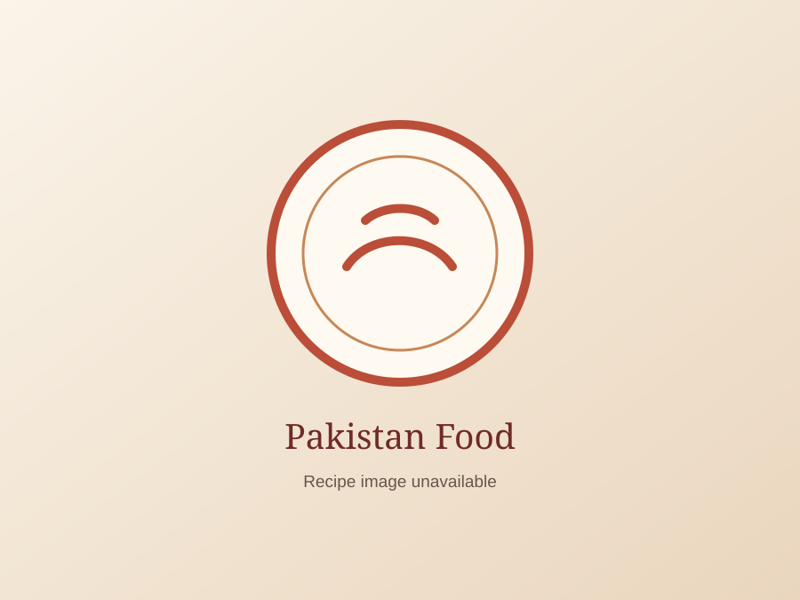

{{ recipe.name }} Recipe
{% if urdu_name %}{{ urdu_name }}
{% endif %}{{ recipe.description }}
{% if key_tip %}Key cooking point: {{ key_tip }}
{% endif %}{{ urdu_description }}
{% if urdu_key_tip %}اہم بات: {{ urdu_key_tip }}
{% endif %}
Ingredients for {{ recipe.name }}
- {% for item in recipe.ingredients %}
- {{ item }} {% endfor %}
How to Make {{ recipe.name }} — Step by Step
- {% for step in detailed_method %}
- Step {{ forloop.index }}{{ step }} {% endfor %}
Helpful Notes for {{ recipe.name }}
Read the full method before starting, measure the ingredients, and complete any chopping, soaking or marinating first. This makes {{ recipe.name }} easier to cook and helps every stage finish at the right time.
{{ technique_note }}
{{ recipe.storage | default: storage_note }}
More {{ recipe.name }} Cooking Tips
{% if detailed_tips %}- {% for tip in detailed_tips offset:1 %}
- {{ tip }} {% endfor %}
- {{ tip_two }}
- {{ tip_three }}
Serving idea: {% if recipe.serving %}{{ recipe.serving }}{% else %}Serve {{ recipe.name }} freshly prepared with a simple salad, chutney, yogurt or another accompaniment that suits this {{ recipe.category | downcase }} dish.{% endif %}
اجزاء
- {% for item in urdu_ingredients %}
- {{ item }} {% endfor %}
{{ urdu_name }} بنانے کا طریقہ — مرحلہ وار
- {% for step in urdu_method %}
- مرحلہ {{ forloop.index }}{{ step }} {% endfor %}
اہم ہدایات
شروع کرنے سے پہلے پوری ترکیب پڑھ لیں، تمام اجزاء ناپ لیں اور کٹنگ، بھگونے یا میرینیٹ کرنے کا کام پہلے مکمل کر لیں۔
{{ urdu_storage }}
مزید بہتر نتیجے کے لیے ٹپس
- {% for tip in urdu_tips offset:1 %}
- {{ tip }} {% endfor %}
پیش کرنے کا طریقہ: {{ urdu_serving }}